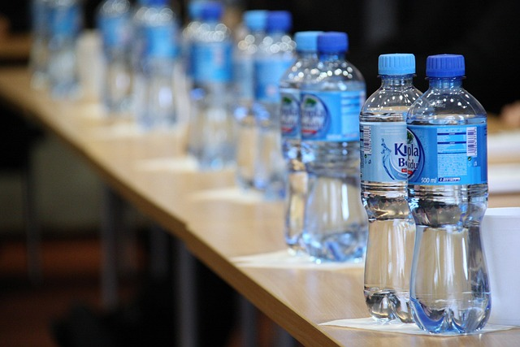

Single-use Plastics
Single-use plastics create massive waste and pollution, while reusable containers offer a sustainable alternative that reduces environmental impact.
Choosing reusable options helps cut down landfill overflow and protects oceans and wildlife.